Fotoğraf kaynakları
Sitedeki şehir fotoğrafları Wikimedia Commons'tan, özgür lisansla kullanılıyor. Fotoğrafları çekenlere teşekkürler! Kırpılan ve küçültülen kopyalar özgün eserle aynı lisansla (CC BY-SA) paylaşılır.
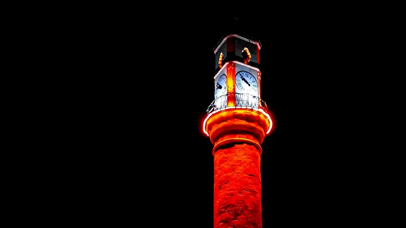
Çorum Saat Kulesi
Fotoğraf: Alienatedplus · CC BY-SA 4.0 · Wikimedia Commons
Dosya: assets/img/corum-saat-kulesi-gece-yatay-*.webp · Orijinal dikey fotoğrafın üst kısmı 16:9 kırpıldı, koyu tonlar hafifçe karartıldı (kaynaktaki sıkıştırma bloklarını gizlemek için), yeniden boyutlandırıldı.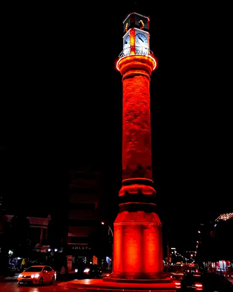
Çorum Saat Kulesi
Fotoğraf: Alienatedplus · CC BY-SA 4.0 · Wikimedia Commons
Dosya: assets/img/corum-saat-kulesi-gece-dikey-*.webp · Koyu tonlar hafifçe karartıldı, yeniden boyutlandırıldı.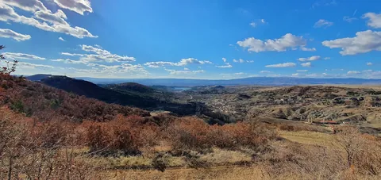
Sıklık Kapıları Tabiat Parkı'ndan Çorum çevresi manzarası
Fotoğraf: Yunus Gergerlioğlu · CC BY-SA 4.0 · Wikimedia Commons
Dosya: assets/img/siklik-kapilari-tabiat-parki-*.webp · Yeniden boyutlandırıldı.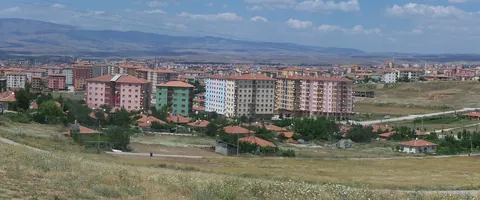
Çorum şehir panoraması
Fotoğraf: altungd · CC BY-SA 3.0 · Wikimedia Commons
Dosya: assets/img/corum-sehir-panorama-*.webp · Panoramanın orta kısmı ~2.4:1 kırpıldı, yeniden boyutlandırıldı.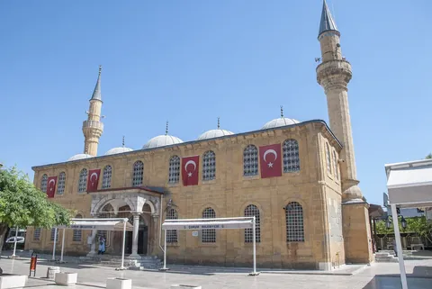
Çorum Ulu Camii
Fotoğraf: Acar54 · CC BY-SA 4.0 · Wikimedia Commons
Dosya: assets/img/corum-ulu-camii-*.webp · Yeniden boyutlandırıldı.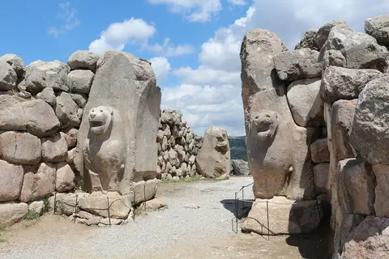
Hattuşa Aslanlı Kapı
Fotoğraf: Bernard Gagnon · CC BY-SA 3.0 · Wikimedia Commons
Dosya: assets/img/hattusa-aslanli-kapi-*.webp · Yeniden boyutlandırıldı.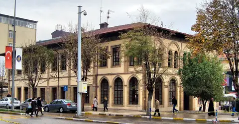
Çorum eski belediye binası ve önündeki cadde
Fotoğraf: HALUK COMERTEL · CC BY 3.0 · Wikimedia Commons
Dosya: assets/img/corum-belediye-binasi-*.webp · Yeniden boyutlandırıldı.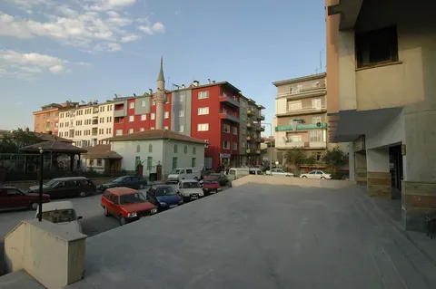
Çorum şehir içi
Fotoğraf: Dosseman · CC BY-SA 4.0 · Wikimedia Commons
Dosya: assets/img/corum-sehir-ici-gun-batimi-*.webp · Yeniden boyutlandırıldı.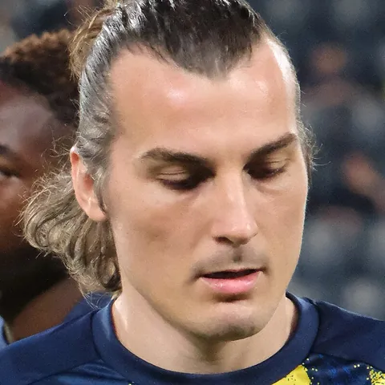
Çağlar Söyüncü (Fenerbahçe forması, 2026)
Fotoğraf: Zafer · CC BY-SA 4.0 · Wikimedia Commons
Dosya: assets/img/oyuncu-caglar-soyuncu-*.webp · Yüz kare kırpıldı, yeniden boyutlandırıldı.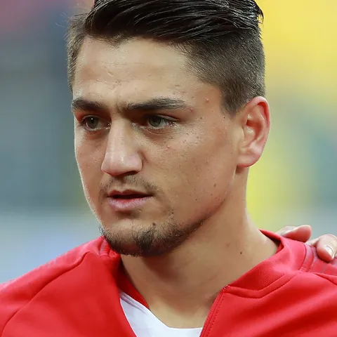
Cengiz Ünder (Türkiye milli takımı eşofmanı, 2018)
Fotoğraf: Антон Зайцев · CC BY-SA 3.0 · Wikimedia Commons
Dosya: assets/img/oyuncu-cengiz-under-*.webp · Yüz kare kırpıldı, yeniden boyutlandırıldı.- Fredy (Antalyaspor forması, 2021)
Fotoğraf: Antalyaspor A.Ş. · CC BY 2.0 · Wikimedia Commons
Dosya: assets/img/oyuncu-fredy-*.webp · Yüz kare kırpıldı, yeniden boyutlandırıldı. - Göktan Gürpüz (Borussia Dortmund II forması, 2022)
Fotoğraf: Sandro Halank · CC BY-SA 4.0 · Wikimedia Commons
Dosya: assets/img/oyuncu-goktan-gurpuz-*.webp · Yüz kare kırpıldı, yeniden boyutlandırıldı. - Ermin Mahmić (SV Lafnitz forması, 2024)
Fotoğraf: Werner100359 · CC BY-SA 4.0 · Wikimedia Commons
Dosya: assets/img/oyuncu-ermin-mahmic-*.webp · Yüz kare kırpıldı, yeniden boyutlandırıldı. - Youssoufa Moukoko (Borussia Dortmund ısınma forması, 2023)
Fotoğraf: Sandro Halank · CC BY-SA 4.0 · Wikimedia Commons
Dosya: assets/img/oyuncu-youssoufa-moukoko-*.webp · Yüz kare kırpıldı, yeniden boyutlandırıldı. 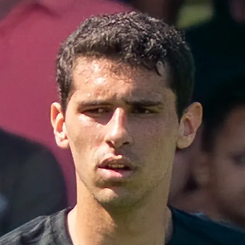
Alexandre Penetra (AZ Alkmaar forması, 2024)
Fotoğraf: Carlo Bruil Fotografie · CC BY 2.0 · Wikimedia Commons
Dosya: assets/img/oyuncu-alexandre-penetra-*.webp · Yüz kare kırpıldı, 420 pikselden 480'e büyütüldü.


_(cropped).JPG){kind=link}

_(cropped).jpg){kind=link}
_by_Sandro_Halank%E2%80%93074.jpg){kind=link}
_25_(Ermin_Mahmi%C4%87).jpg){kind=link}
_by_Sandro_Halank%E2%80%93066.jpg){kind=link}
.jpg){kind=link}
Haber kapaklarındaki fotoğrafların sahibi her haberin kapağında yazılıdır. Yöneticiler yalnız hakkına sahip oldukları fotoğrafları yükler.